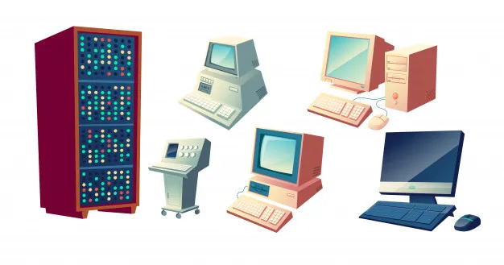

Módulo 1 - Primeiros Passos com HTML*
- Introdução ao desenvolvimento web com HTML e os conceitos iniciais para construção de páginas estáticas e dinâmicas -
Índice
- A História dos Computadores
- O que são Clients?
- O que são Servers?
- A Estrutura Básica do HTML
- A Diferença entre Listas Ordenadas e Não Ordenadas
- Links de Referência
A História dos Computadores
Uma jornada de inovação e criatividade humana, ela começou com dispositivos mecânicos projetados para cálculos específicos e evoluiu para a era dos computadores eletrônicos, que revolucionaram a maneira como processamos informações. Desde a criação dos primeiros computadores programáveis até o surgimento dos PCs e a conectividade global proporcionada pela internet, a história dos computadores testemunhou mudanças profundas na sociedade. A miniaturização dos componentes eletrônicos, a evolução dos sistemas operacionais e os avanços na inteligência artificial têm impulsionado a rápida evolução dos computadores, tornando-os ferramentas indispensáveis em nossas vidas diárias.
Miniaturização do Computador ao longo da história.
O que são Clients?
Clients são os elementos que utilizam e interagem com os serviços ou dados fornecidos por
servidores em uma arquitetura de rede.
Eles podem ser computadores, smartphones, tablets ou
qualquer outro dispositivo que acesse a rede.
Os clients são a interface através da qual os
usuários acessam aplicativos, sites ou serviços online.
Eles enviam solicitações para os
servidores e exibem as respostas, tornando possível a interação do usuário com os recursos disponibilizados
pelos servidores.
O que são Servers?
Servers são poderosos computadores projetados para atender a várias solicitações dos
clients em uma rede.
Eles são responsáveis por armazenar, processar e
disponibilizar dados e serviços para os usuários.
Servidores podem ser físicos ou
virtuais, e são executados em data centers ou em nuvem.
Eles são essenciais
para a hospedagem de websites, gerenciamento de banco de dados, entrega de conteúdo, e muitos outros
serviços essenciais da internet.

Diagrama de rede de computadores de clientes comunicando com um servidor através da Internet.
A Estrutura Básica do HTML
A estrutura básica de um documento HTML é composta pela declaração <!DOCTYPE>, seguida
da tag <html> que envolve todo o conteúdo.
Dentro da tag <html>, estão os
elementos <head> e <body>.
O <head> contém informações
relevantes para o documento, como o título da página, metadados e referências a arquivos externos.
O <body>
contém o conteúdo visível da página, como textos, imagens, links e outros elementos HTML.
Seguir a
estrutura básica é crucial para garantir a compatibilidade e correta interpretação do documento em diferentes
navegadores e dispositivos.
Esquema da estrutura básica do HTML.
A Diferença entre Listas Ordenadas e Não Ordenadas
A principal diferença entre as listas ordenadas (<ol>) e as listas não ordenadas (<ul>) está na
forma de apresentação dos itens.
Nas listas ordenadas, os itens são organizados em uma sequência numérica,
como:
- Item 1
- Item 2
- Item 3
- Item A
- Item B
- Item C